The Mission
Helping individuals and families to Heal On Purpose.
Tools for the journey
Helping individuals, couples, and families heal on purpose through faith-centered tools for emotional growth, grief recovery, communication, and healthy relationships.
Vision & Mission
Stamena4Life is committed to helping people show up as the best versions of themselves. We share relationship tools for the journey of life centered around personal growth, mental health, emotional and relational development, and healing. Our approach utilizes tools anchored in Christian biblical principles. We believe, with God's help, if people are willing to do the work, they can heal on purpose.
Helping individuals and families to Heal On Purpose.
Introducing individuals and families to transformative tools that foster healing through life's changes and challenges.
Seminars, coaching, books, media, group sessions, and practical resources built for communication, emotional resilience, and relationship repair.
About Us
Steven and Tamara Conway are the founders of Stamena4Life, a 501(c)(3) ministry dedicated to the healing of marriages and families. Married for 24 years, they are the proud parents of four children.
This dynamic team has over 20 years of experience empowering couples, families, and individuals around the world. Through their faith-centered approach, they have spoken across North America, Europe, South America, and the South Pacific, sharing tools for healthy communication, emotional healing, and relationship growth.
They are the creators and hosts of the 3ABN series When We Talk and co-hosts of the podcast We're Still Talking, where they tackle real-life issues with transparency, humor, and hope.

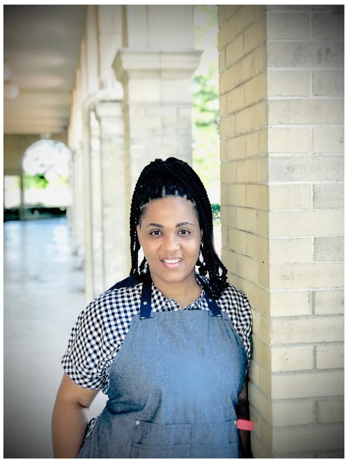
Tamara Conway is a faith-based speaker, certified Grief Recovery Specialist and Mental Health coach, co-founder of Stamena4Life Ministries, and author of Kill The Girl: From Coping to Healing.
Her transparent, Spirit-led teaching blends biblical wisdom with practical tools to help others heal from trauma, build emotional resilience, and communicate with purpose.

Steven Conway is a husband, father, educator, and pastor with over 23 years of ministry experience. He is known for his relatable approach to faith, relationships, and life transformation.
He is co-creator of the 3ABN relationship series When We Talk and co-host of We're Still Talking alongside Tamara.
H.O.P. Lane
H.O.P. Lane centers on helping people identify and process change, forgive, release bitterness, uncover roots of addictive behaviors, loss of faith, grief, difficult memories, broken relationships, and more.
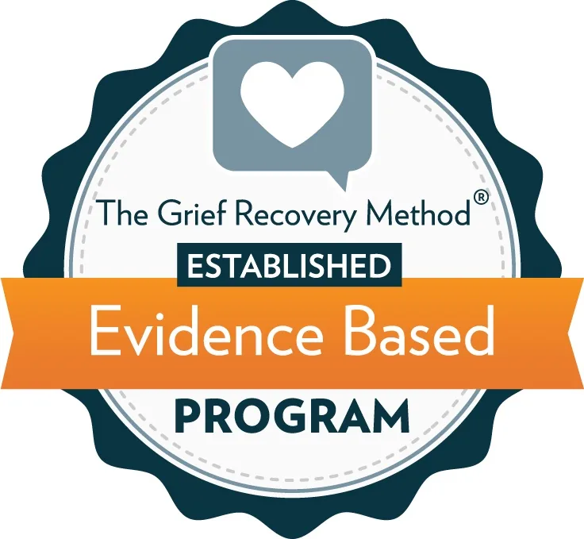
Seven to eight online live group sessions or one-on-one support centered on helping people bring ongoing pain to an end with actionable tools.
A four-session live online workshop for parents, teachers, caregivers, and mentors who want practical ways to support children and youth through grief, loss, and change.
Email for InfoThe current site lists March 5, 2026 Grief Recovery options in Troy, Michigan and virtual Zoom cohorts. Confirm current availability before promoting live dates.
Programs & Coaching
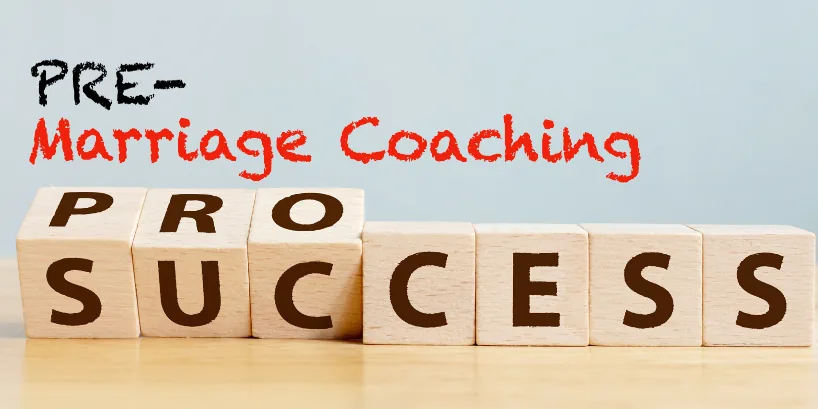
Couples coaching intended to help build strong foundations by exploring communication, conflict resolution, expectations, and faith-based principles for lasting love.
Schedule sessions
Three interactive lectures and group activities for communities, churches, schools, or businesses processing significant change, trauma, or loss.
Inquire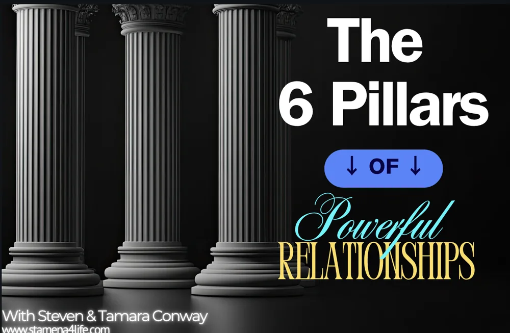
Six interactive in-person presentations focused on communication, conflict resolution, loss, emotional wounds, family dynamics, community, ministry, and the workplace.
Book the seriesResources
Keep moving from coping to healing with free resources, guided content, books, and media from Stamena4Life.
These practical downloads are easy to share with couples, groups, families, and ministry teams that need a clear place to begin.
A reflective tool from the current H.O.P. Lane resource library.
Open download PDFIncludes the cross-cultural communication tool from the live resource page.
Open download FreeA free downloadable resource connected to the H.O.P. Lane page.
Open resource PreviewPreview the opening chapters of Kill The Girl.
Read previewBooks, Podcast & Series
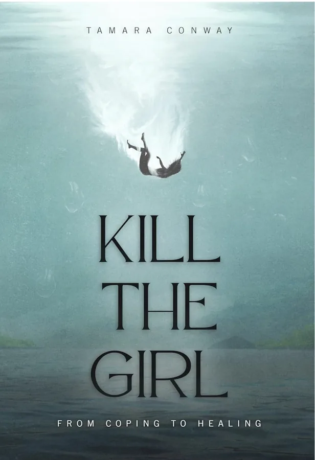

Podcast
Steven and Tamara speak openly about real-life challenges and victories with content centered around personal and relational growth.
Listen Now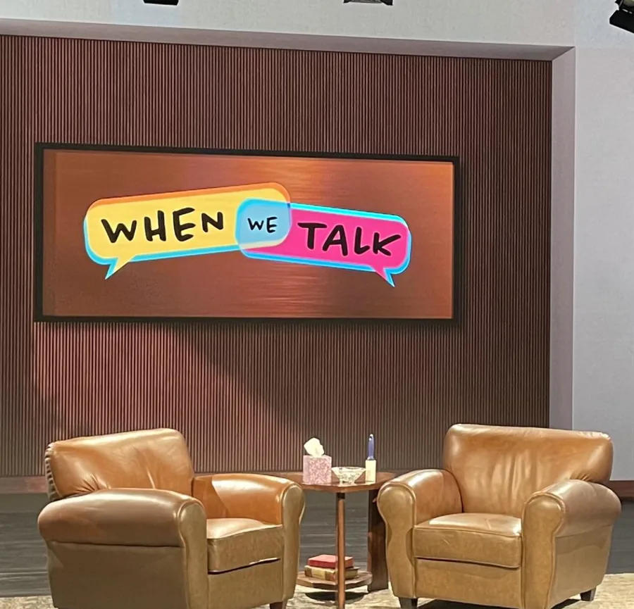
3ABN Series
Watch the 3ABN relationship series and related YouTube content from Stamena4Life.
TV Interviews
Featured conversations from 3ABN and other television appearances with Steven and Tamara Conway.
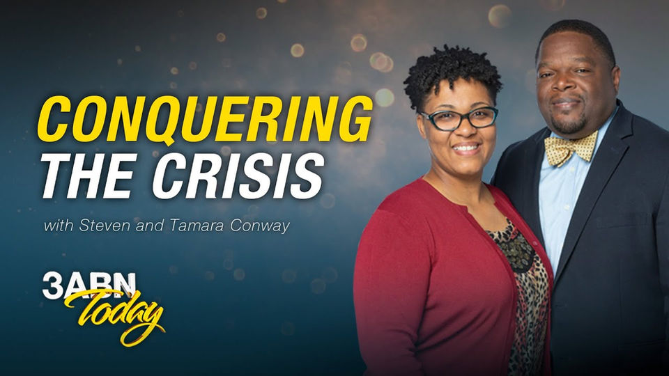
Play Conquering The Crisis Interview with Steven and Tamara Conway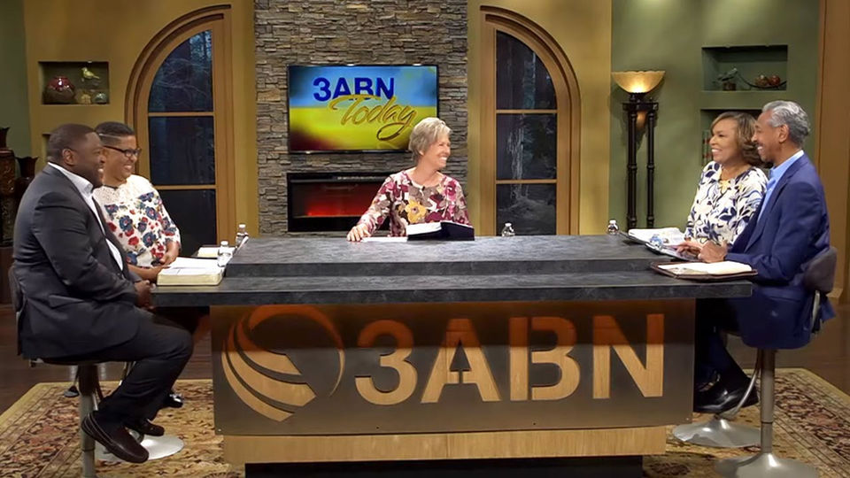
Play Family Blessings 3ABN television interview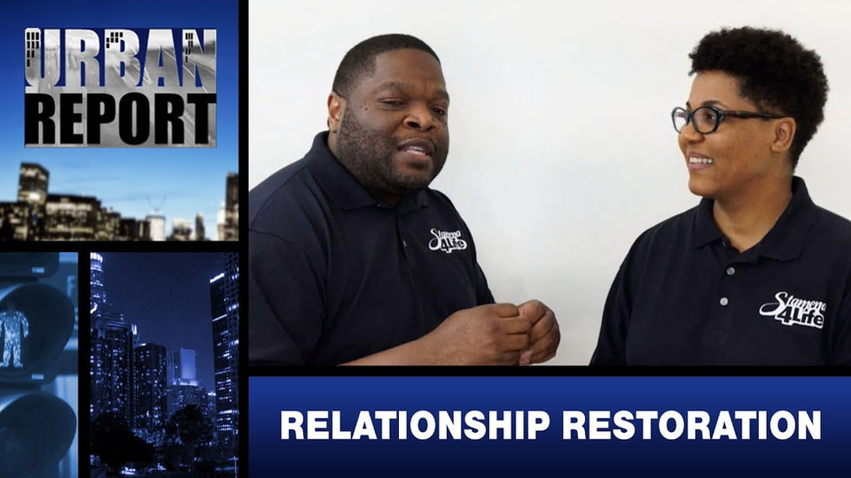
Play Relationship Conversation Live media feature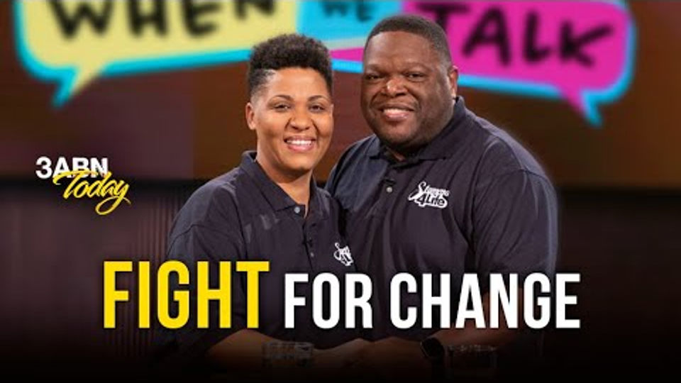
Play Healing On Purpose Media Featured conversation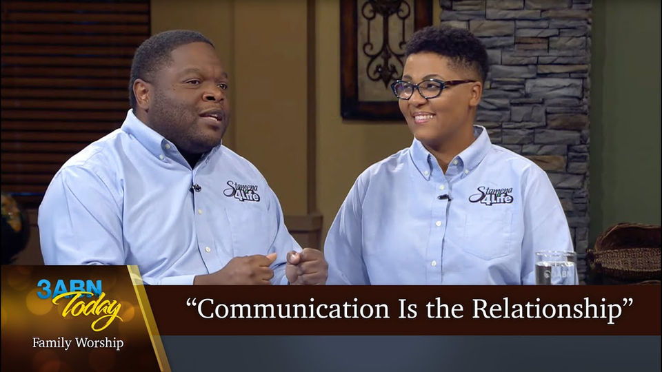
Play More From Stamena4Life Additional interviewTestimonies
"Tamara is top notch in her care and teaching/helping others learn about or process grief. She, herself, has gone through a lot, so there is a deep understanding and compassion."
"Thank you for what you and your husband did to help me and my husband. We are together today because of your love. We are forever grateful."
 Denise H.Testimony
Denise H.Testimony
"Words are not sufficient to express our gratitude for what you both poured into the people of our church this weekend...looking forward to hearing more soon."
 Lisa H.Testimony
Lisa H.Testimony
"It was an authentic and informative experience! Thank you for blessing us with so many gems. Looking forward to what MORE God has in store for us all as we choose to Heal On Purpose together."
 Colleen M.Testimony
Colleen M.Testimony
"God used The Journey programming and Tammy's guidance, to begin my healing process so that I can be a healthier and whole version of myself."
"My biggest takeaway was my past experiences do not have to define me and I do not have to carry the pain and baggage with me anymore."
 S.F.Testimony
S.F.Testimony
Support the mission
Subscriptions, donations, book purchases, and merchandise purchases further the goal of reaching people who need hope and strengthening the foundations of families for generations to come.
Stamena4Life is a 501(c)(3) nonprofit. Donations are tax-deductible as allowed by law.
Contact & Booking
Use the booking inquiry for grief recovery seminars, preaching/speaking, the 6 Pillars series, pre-marriage coaching, and mental health coaching. You can also call or email directly.